Part 1 — PCA by hand
The dataset has five points with two features each: \((-2,-1),\ (-1,0),\ (0,1),\ (1,2),\ (2,3)\). PCs are unit vectors (\(\lVert\mathbf{w}\rVert=1\)), the data are centred before PCA, and the first PC is the direction that minimises the orthogonal distance to all the data points. (1) What is the first principal component? (2) What is the L2 reconstruction error of the point \((3,3)\)? (3) What is the L2 reconstruction error of the point \((3,4)\)?
(1) The first principal component
Step 1: centre the data. The sample mean is \[\begin{equation} \bar{\mathbf{x}}=\frac15\sum_{n=1}^{5}\mathbf{x}_n =\frac15\begin{pmatrix}-2-1+0+1+2\\-1+0+1+2+3\end{pmatrix} =\begin{pmatrix}0\\1\end{pmatrix}, \end{equation}\] so the centred points \(\tilde{\mathbf{x}}_n=\mathbf{x}_n-\bar{\mathbf{x}}\) are \[\begin{equation} \tilde{\mathbf{X}}=\begin{pmatrix}-2&-1&0&1&2\\-2&-1&0&1&2\end{pmatrix}^{\mathsf{T}}. \end{equation}\] Every centred point has \(\tilde x_1=\tilde x_2\), so all five lie exactly on the line \(\tilde x_2=\tilde x_1\).
Step 2: covariance matrix. With \(\sum_n\tilde x_{n1}^2=\sum_n\tilde x_{n2}^2=\sum_n\tilde x_{n1}\tilde x_{n2}=4+1+0+1+4=10\), \[\begin{equation} \mathbf{S}=\frac1N\tilde{\mathbf{X}}^{\mathsf{T}}\tilde{\mathbf{X}}=\frac15\begin{pmatrix}10&10\\10&10\end{pmatrix} =\begin{pmatrix}2&2\\2&2\end{pmatrix}. \end{equation}\] (Using \(1/(N-1)\) instead gives \(\bigl(\begin{smallmatrix}2.5&2.5\\2.5&2.5\end{smallmatrix}\bigr)\). That scales the eigenvalues but leaves the eigenvectors unchanged.)
Step 3: eigen-decomposition. The characteristic equation is \[\begin{equation} \det(\mathbf{S}-\lambda\mathbf I)=(2-\lambda)^2-4=\lambda(\lambda-4)=0 \;\Longrightarrow\;\lambda_1=4,\ \lambda_2=0 . \end{equation}\] For \(\lambda_1=4\), \((\mathbf{S}-4\mathbf I)\mathbf{w}=\mathbf 0\) gives \(-2w_1+2w_2=0\), so \(w_1=w_2\). After normalising, \[\begin{equation} \boxed{\;\mathbf{w}_1=\tfrac{1}{\sqrt2}\begin{pmatrix}1\\1\end{pmatrix}\approx\begin{pmatrix}0.7071\\0.7071\end{pmatrix}\;} \qquad\text{and}\qquad \mathbf{w}_2=\tfrac{1}{\sqrt2}\begin{pmatrix}1\\-1\end{pmatrix}\ (\lambda_2=0). \end{equation}\]
Check with the minimum-distance view. For any unit \(\mathbf{w}\) the total squared orthogonal distance is \(\sum_n\lVert\tilde{\mathbf{x}}_n\rVert^2-\sum_n(\mathbf{w}^{\mathsf{T}}\tilde{\mathbf{x}}_n)^2=\mathrm{tr}(N\mathbf{S})-N\,\mathbf{w}^{\mathsf{T}}\mathbf{S}\mathbf{w}\). Minimising it is the same as maximising \(\mathbf{w}^{\mathsf{T}}\mathbf{S}\mathbf{w}\), which the top eigenvector does. Here the minimum is \(20-5\cdot4=0\): the line \(\mathbf{x}=\bar{\mathbf{x}}+a\,\mathbf{w}_1\), i.e. \(x_2=x_1+1\), passes through all five points. The sign is arbitrary. \(-\mathbf{w}_1\) describes the same line and gives the same reconstructions.
(2) Reconstruction error of \((3,3)\)
The one-dimensional code, the reconstruction and the error are \[\begin{equation} z=\mathbf{w}_1^{\mathsf{T}}(\mathbf{x}-\bar{\mathbf{x}}),\qquad \hat{\mathbf{x}}=\bar{\mathbf{x}}+z\,\mathbf{w}_1,\qquad e=\lVert\mathbf{x}-\hat{\mathbf{x}}\rVert_2 . \end{equation}\] For \(\mathbf{x}=(3,3)\): \(\mathbf{x}-\bar{\mathbf{x}}=(3,2)\), so \[\begin{align} z&=\tfrac{1}{\sqrt2}(3+2)=\tfrac{5}{\sqrt2}\approx3.5355,\\ \hat{\mathbf{x}}&=\begin{pmatrix}0\\1\end{pmatrix}+\tfrac{5}{\sqrt2}\cdot\tfrac1{\sqrt2}\begin{pmatrix}1\\1\end{pmatrix} =\begin{pmatrix}2.5\\3.5\end{pmatrix},\\ \mathbf{x}-\hat{\mathbf{x}}&=\begin{pmatrix}0.5\\-0.5\end{pmatrix},\qquad e=\sqrt{0.5^2+0.5^2}=\sqrt{0.5}=\tfrac1{\sqrt2}. \end{align}\] The same number comes from the discarded component: \(e=|\mathbf{w}_2^{\mathsf{T}}(\mathbf{x}-\bar{\mathbf{x}})|=|3-2|/\sqrt2=1/\sqrt2\).
Answer: \(\hat{\mathbf{x}}=(2.5,\,3.5)\) and the reconstruction error is \(\boxed{e=1/\sqrt2\approx0.7071}\).
(3) Reconstruction error of \((3,4)\)
For \(\mathbf{x}=(3,4)\): \(\mathbf{x}-\bar{\mathbf{x}}=(3,3)\), which is parallel to \(\mathbf{w}_1\). \[\begin{align} z&=\tfrac1{\sqrt2}(3+3)=3\sqrt2\approx4.2426,\qquad \hat{\mathbf{x}}=\begin{pmatrix}0\\1\end{pmatrix}+3\sqrt2\cdot\tfrac1{\sqrt2}\begin{pmatrix}1\\1\end{pmatrix}=\begin{pmatrix}3\\4\end{pmatrix},\\ e&=\lVert(3,4)-(3,4)\rVert=0,\qquad\text{equivalently } |\mathbf{w}_2^{\mathsf{T}}(\mathbf{x}-\bar{\mathbf{x}})|=|3-3|/\sqrt2=0 . \end{align}\]
Answer: \((3,4)\) satisfies \(x_2=x_1+1\), so it lies on the first principal axis and is reconstructed exactly: \(\boxed{e=0}\).
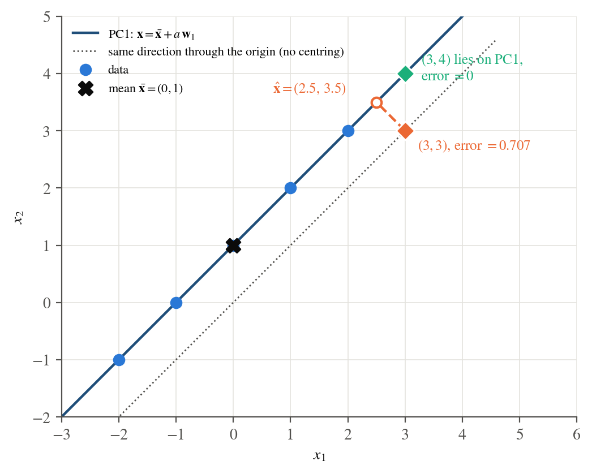
Why centring matters. Without centring, the axis would pass through the origin
(\(x_2=x_1\)). Then \((3,3)\) would have error \(0\) and \((3,4)\) would have error \(1/\sqrt2\), which is
exactly the wrong way round. The script make_report.py recomputes all of the above
numerically and gets the same values (see the code listing at the end).
Data used in Parts 2–5
The Iris data (UCI repository, dataset 53) contain \(N=150\) flowers, 50 from each of three species
(setosa, versicolor, virginica). There are \(D=4\) features, all in
centimetres: sepal length (SL), sepal width (SW), petal length (PL) and petal width (PW).
The copy bundled with scikit-learn (sklearn.datasets.load_iris) was used. It has the same 150 rows as
the UCI file, except that it corrects two known transcription errors (samples 35 and 38) back to
Fisher’s original values. The effect on every result below is negligible.
Evaluation tools used throughout. To back up the visual impressions with numbers, the report uses:
5-NN accuracy: a \(k\)-nearest-neighbour classifier (\(k=5\)) scored by stratified 10-fold cross-validation repeated 5 times (mean \(\pm\) std over the 50 folds). For PCA and ISOMAP the embedding is refitted inside every training fold, so it never sees its own test points.
Silhouette score using the true labels as clusters (\(+1\) means compact, well-separated clusters, \(0\) means overlapping clusters).
Exact linear-separability tests: a hyperplane separating two groups exists iff the linear program \(s_i(\mathbf{w}^{\mathsf{T}}\mathbf{x}_i+b)\ge1\) is feasible.
Part 2 — Data visualisation by marginalisation
Marginalise the Iris data (project it onto one feature axis, or drop the other features) and visualise it for one feature, two features and three features. Do any of these marginalisations show the dataset splitting into nice clusters? If so, which ones? Comment.
Marginalising onto a subset \(\mathcal S\) of features is the projection \(\mathbf{x}\mapsto\mathbf P_{\mathcal S}\mathbf{x}\), where \(\mathbf P_{\mathcal S}\) keeps the rows of the identity matrix indexed by \(\mathcal S\). Instead of picking a few subsets, every one was plotted: all 4 single features (Figure 2), all 6 pairs (Figure 3) and all 4 triplets (Figure 4). Table 1 scores all 15 subsets.
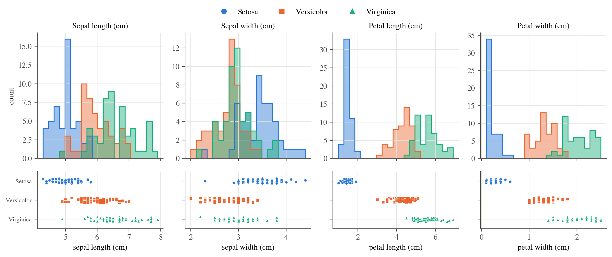
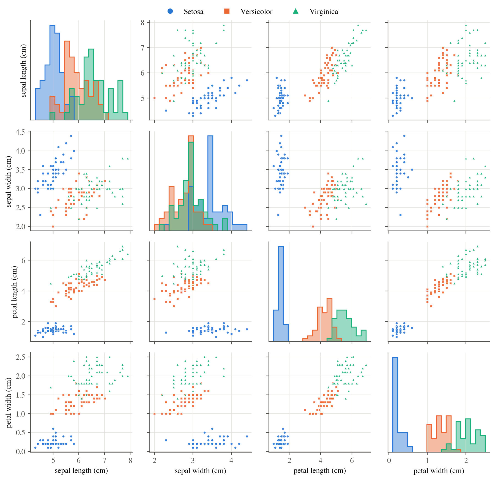
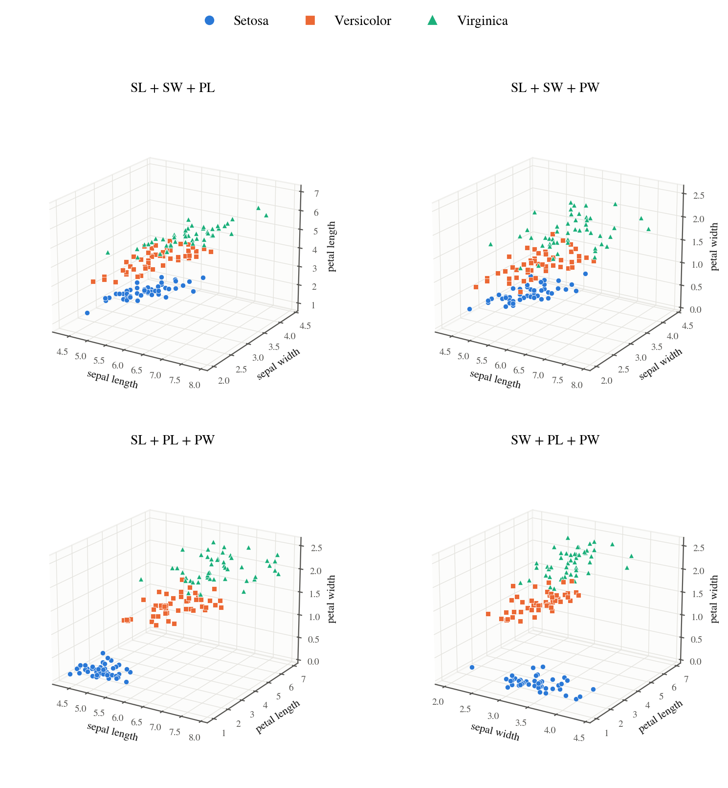
| Features | 5-NN acc. (%) | Silhouette | Setosa sep. | V/V sep. | LDA errors (V/V) |
|---|---|---|---|---|---|
| SL | 67.9 \(\pm\) 11.3 | 0.205 | no | no | 27 |
| SW | 50.9 \(\pm\) 7.6 | 0.034 | no | no | 42 |
| PL | 92.8 \(\pm\) 5.6 | 0.639 | yes | no | 8 |
| PW | 96.0 \(\pm\) 4.8 | 0.671 | yes | no | 6 |
| SL + SW | 78.1 \(\pm\) 9.0 | 0.248 | yes | no | 25 |
| SL + PL | 94.4 \(\pm\) 5.7 | 0.519 | yes | no | 6 |
| SL + PW | 95.6 \(\pm\) 5.4 | 0.413 | yes | no | 6 |
| SW + PL | 94.9 \(\pm\) 6.2 | 0.556 | yes | no | 7 |
| SW + PW | 94.7 \(\pm\) 5.7 | 0.482 | yes | no | 5 |
| PL + PW | 96.0 \(\pm\) 5.0 | 0.641 | yes | no | 6 |
| SL + SW + PL | 95.1 \(\pm\) 5.5 | 0.479 | yes | no | 7 |
| SL + SW + PW | 94.1 \(\pm\) 6.1 | 0.379 | yes | no | 5 |
| SL + PL + PW | 95.9 \(\pm\) 5.3 | 0.539 | yes | no | 3 |
| SW + PL + PW | 96.1 \(\pm\) 5.2 | 0.576 | yes | no | 4 |
| SL + SW + PL + PW | 96.4 \(\pm\) 5.0 | 0.503 | yes | no | 3 |
Comments.
Yes, the petal features give nice clusters. Petal length on its own puts setosa in \([1.0,1.9]\) cm and the other species in \([3.0,6.9]\) cm. Petal width puts setosa in \([0.1,0.6]\) and the rest in \([1.0,2.5]\). Either one separates setosa perfectly with a wide empty gap. Petal width alone reaches \(96.0\%\) 5-NN accuracy and the highest silhouette (\(0.671\)) of any subset, the same as all four features (\(96.4\%\)).
The sepal features are poor on their own. Sepal width alone is little better than chance (\(50.9\%\), silhouette \(0.03\)) because all three histograms overlap. Sepal length (\(67.9\%\)) orders the species but with heavy overlap. Combined (SL + SW), they do separate setosa exactly: setosa flowers have short but wide sepals, which is visible as the isolated blue group in the SL–SW panel. Versicolor and virginica remain mixed (\(78.1\%\)).
The best 2-D view is PL + PW (96.0%). It shows three elongated clusters along one diagonal, which already hints that most of the variance is on one direction (Part 3). The best 3-D views are SW + PL + PW (96.1%) and SL + PL + PW, which has the fewest LDA errors.
Only two “natural” clusters exist. Setosa is linearly separable in 13 of the 15 subsets, i.e. in every one except SL alone and SW alone. Versicolor and virginica are never linearly separable, not even with all four features. Fisher’s LDA still makes 3 errors (a logistic-regression boundary makes 2), and the overlap region (PL \(\approx4.5\)–\(5.1\), PW \(\approx1.4\)–\(1.8\)) appears in every view. So the dataset has one very clear cluster and two touching ones.
Adding features does not always help. SL + SW + PW (94.1%) is worse than PW alone (96.0%) because the noisy sepal coordinates dilute the Euclidean distances that k-NN relies on.
Part 3 — PCA
Perform PCA on the Iris data (scikit-learn may be used). Visualise the results marginalised on the major axis, on the top 2 axes and on the top 3 axes. Give the vectors that describe the PCA axes.
Method
With the data matrix \(\mathbf{X}\in\mathbb R^{150\times4}\), mean \(\bar{\mathbf{x}}\) and centred
matrix \(\tilde{\mathbf{X}}=\mathbf{X}-\mathbf 1\bar{\mathbf{x}}^{\mathsf{T}}\), PCA finds the eigen-decomposition of the sample covariance
\[\begin{equation}
\mathbf{S}=\frac1{N-1}\tilde{\mathbf{X}}^{\mathsf{T}}\tilde{\mathbf{X}}=\mathbf{W}\boldsymbol\Lambda\mathbf{W}^{\mathsf{T}},\qquad
\mathbf{W}=[\mathbf{w}_1,\dots,\mathbf{w}_4],\quad \lambda_1\ge\dots\ge\lambda_4 ,
\end{equation}\]
or equivalently the SVD \(\tilde{\mathbf{X}}=\mathbf U\boldsymbol\Sigma\mathbf{W}^{\mathsf{T}}\) with \(\lambda_i=\sigma_i^2/(N-1)\).
This is what scikit-learn’s PCA class computes. Projecting onto the top \(k\) axes gives the scores
\(\mathbf{z}=\mathbf{W}_k^{\mathsf{T}}(\mathbf{x}-\bar{\mathbf{x}})\). Because all four features are in centimetres, PCA was applied to the
raw (centred, unscaled) measurements, which is the default in scikit-learn. A standardised
version is in the appendix on standardised features for comparison. The code also checks that
scikit-learn’s axes match a direct numpy.linalg.eigh of \(\mathbf{S}\) (up to sign).
The mean is \(\bar{\mathbf{x}}=(5.843,\ 3.057,\ 3.758,\ 1.199)\) cm and the covariance matrix (cm\(^2\)) is
| SL | SW | PL | PW | |
|---|---|---|---|---|
| SL | 0.6857 | -0.0424 | 1.2743 | 0.5163 |
| SW | -0.0424 | 0.1900 | -0.3297 | -0.1216 |
| PL | 1.2743 | -0.3297 | 3.1163 | 1.2956 |
| PW | 0.5163 | -0.1216 | 1.2956 | 0.5810 |
The total variance is \(\mathrm{tr}(\mathbf{S})=4.5730\) cm\(^2\), and \(68\%\) of it (\(3.116\)) is petal-length variance on its own.
The PCA axes
| SL | SW | PL | PW | \(\lambda_k\) | % var. | |
|---|---|---|---|---|---|---|
| PC1 | \(+0.3614\) | \(-0.0845\) | \(+0.8567\) | \(+0.3583\) | 4.2282 | 92.46% |
| PC2 | \(+0.6566\) | \(+0.7302\) | \(-0.1734\) | \(-0.0755\) | 0.2427 | 5.31% |
| PC3 | \(-0.5820\) | \(+0.5979\) | \(+0.0762\) | \(+0.5458\) | 0.0782 | 1.71% |
| PC4 | \(+0.3155\) | \(-0.3197\) | \(-0.4798\) | \(+0.7537\) | 0.0238 | 0.52% |
PCA axes (feature order SL, SW, PL, PW): \[\begin{align*} \mathbf{w}_1&=(\phantom{-}0.3614,\ -0.0845,\ \phantom{-}0.8567,\ \phantom{-}0.3583) & \mathbf{w}_2&=(\phantom{-}0.6566,\ \phantom{-}0.7302,\ -0.1734,\ -0.0755)\\ \mathbf{w}_3&=(-0.5820,\ \phantom{-}0.5979,\ \phantom{-}0.0762,\ \phantom{-}0.5458) & \mathbf{w}_4&=(\phantom{-}0.3155,\ -0.3197,\ -0.4798,\ \phantom{-}0.7537) \end{align*}\] The vectors are orthonormal (\(\mathbf{W}^{\mathsf{T}}\mathbf{W}=\mathbf I\), verified numerically).
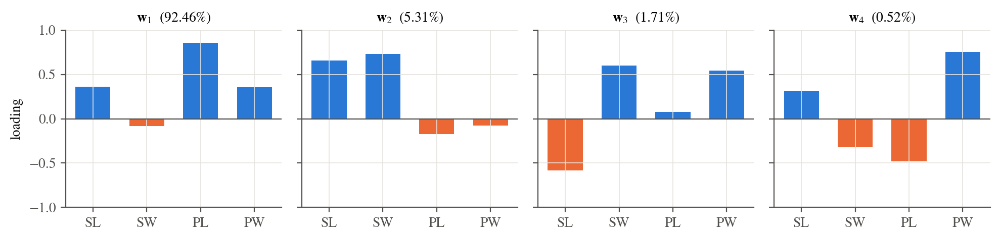
Interpretation of the axes.
\(\mathbf{w}_1\) (92.46%) is a flower-size / petal-size axis. All three length-type features load positively, and petal length dominates (\(0.857\)) because it has by far the largest variance. Sepal width hardly contributes.
\(\mathbf{w}_2\) (5.31%) is a sepal-size axis. It measures sepal width and sepal length together, roughly independent of the petals.
\(\mathbf{w}_3\) and \(\mathbf{w}_4\) (2.2% together) are contrasts, e.g. sepal width minus sepal length, and petal width minus petal length. They mostly describe within-species shape variation.
Visualisation on the top 1, 2 and 3 axes
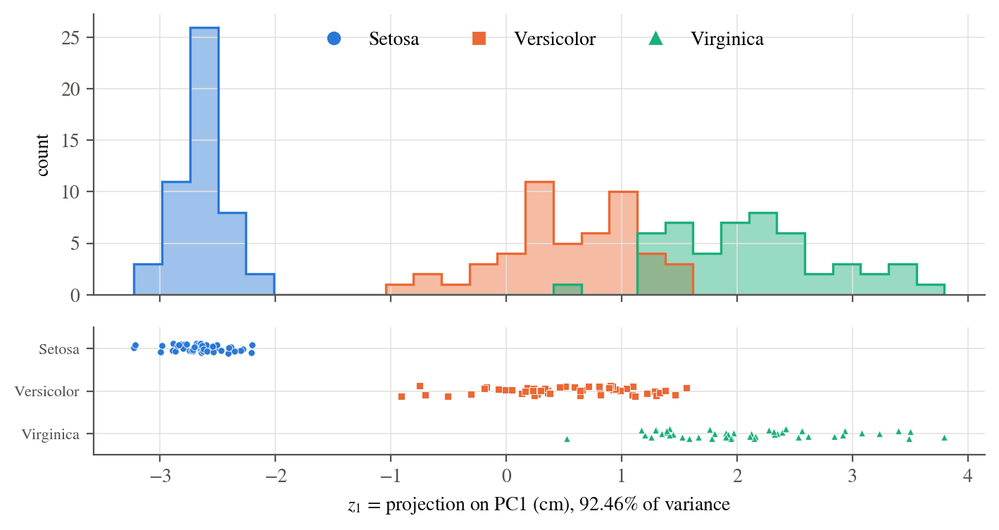
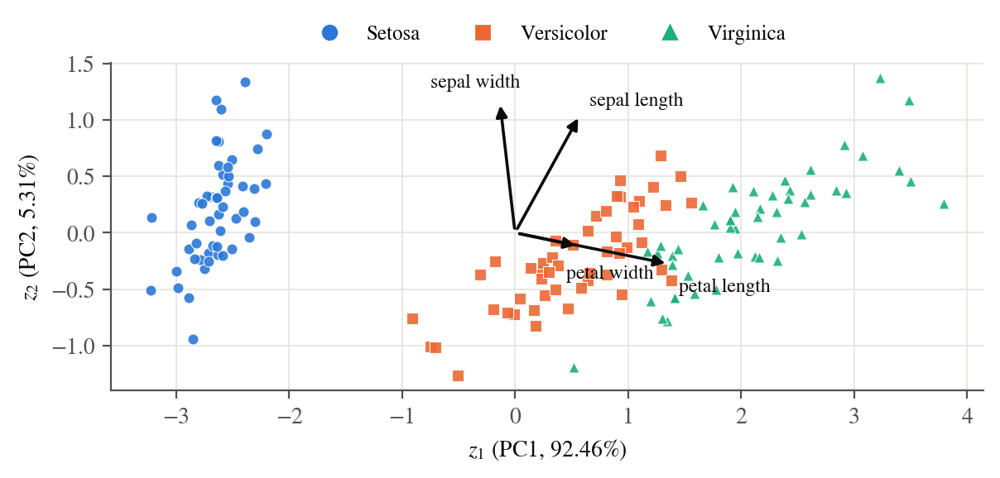
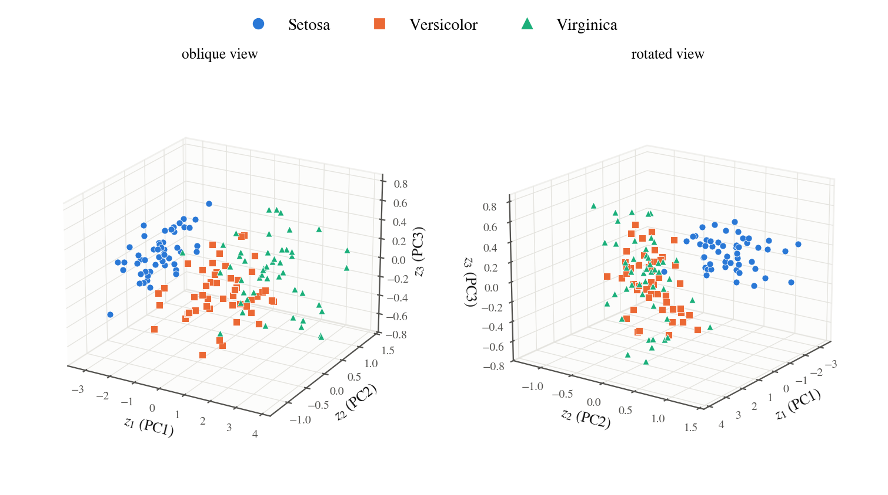
Comments.
One axis already separates setosa. On \(z_1\) setosa occupies \([-3.22,-2.20]\) and the other two species start at \(-0.91\), a gap of \(1.3\) cm. Versicolor and virginica are ordered along \(z_1\) but overlap on \(z_1\in[0.52,1.56]\). 5-NN on \(z_1\) alone gives \(91.3\%\).
Two axes give almost the full picture. \((z_1,z_2)\) keeps \(97.8\%\) of the variance (Part 4) and has 5-NN accuracy \(96.5\%\), the same as the full 4-D data (\(96.4\%\)). The biplot shows why: the petal arrows lie almost along \(z_1\), and the sepal-width arrow is almost along \(z_2\).
The third axis adds little. \(z_3\) has a range of only \(\pm0.8\) cm. The clusters are just as separated in 3-D as in 2-D (5-NN \(96.4\%\)). The point cloud is very flat, nearly a plane, as the small \(\lambda_3\) suggests.
Compared with Part 2: PC1 is close to petal length (\(\mathbf{w}_1\approx\) PL with some SL and PW) and gives about the same 1-D separation, but it combines information from three features. Projections on the best single feature and on PC1 look alike because the dominant direction of variance in Iris is also the direction that separates the species. Nothing guarantees this in general, since PCA is unsupervised.
Part 4 — Data compression
Using the “analysis” view (PCA maximises the variance explained by the PCs) and the connection between the Frobenius norm and the variance of a centred data matrix \(\mathbf{X}\): (1) How much of the variance is explained by the 2-D representation from Part 3? (2) How many PCs are needed to explain 50% of the variance?
Frobenius norm and variance
For the centred matrix \(\tilde{\mathbf{X}}\) (rows \(\tilde{\mathbf{x}}_n^{\mathsf{T}}\)), \[\begin{equation} \lVert \tilde{\mathbf{X}}\rVert_F^2=\sum_{n=1}^N\sum_{j=1}^D\tilde x_{nj}^2=\mathrm{tr}(\tilde{\mathbf{X}}^{\mathsf{T}}\tilde{\mathbf{X}}) =(N-1)\,\mathrm{tr}(\mathbf{S})=(N-1)\sum_{i=1}^D\lambda_i=\sum_{i=1}^{D}\sigma_i^2 , \end{equation}\] so the squared Frobenius norm is \((N-1)\) times the total variance. Projecting onto \(k\) PCs gives the rank-\(k\) reconstruction \(\hat{\mathbf{X}}_k=\tilde{\mathbf{X}}\mathbf{W}_k\mathbf{W}_k^{\mathsf{T}}=\mathbf U_k\boldsymbol\Sigma_k\mathbf{W}_k^{\mathsf{T}}\). Since \(\hat{\mathbf{X}}_k\) and \(\tilde{\mathbf{X}}-\hat{\mathbf{X}}_k\) are orthogonal, \[\begin{equation} \underbrace{\lVert \tilde{\mathbf{X}}\rVert_F^2}_{\text{total}} =\underbrace{\lVert \hat{\mathbf{X}}_k\rVert_F^2}_{\sum_{i\le k}\sigma_i^2\ \text{(explained)}} +\underbrace{\lVert \tilde{\mathbf{X}}-\hat{\mathbf{X}}_k\rVert_F^2}_{\sum_{i>k}\sigma_i^2\ \text{(reconstruction error)}}, \qquad R^2_k=\frac{\lVert \hat{\mathbf{X}}_k\rVert_F^2}{\lVert \tilde{\mathbf{X}}\rVert_F^2}=\frac{\sum_{i=1}^k\sigma_i^2}{\sum_{i=1}^D\sigma_i^2}. \end{equation}\] So the “analysis” view (maximise the variance explained) and the “synthesis” view (minimise the reconstruction error \(\lVert \tilde{\mathbf{X}}-\hat{\mathbf{X}}_k\rVert_F^2\)) are the same problem. By Eckart–Young, no rank-\(k\) matrix has a smaller error.
Results
For Iris, \(\lVert \tilde{\mathbf{X}}\rVert_F^2=681.3706\) cm\(^2\), which equals \((N-1)\,\mathrm{tr}(\mathbf{S})=149\times4.5730\).
| \(k\) | \(\sigma_k\) | \(\sigma_k^2\) | \(\sigma_k^2/\lVert \tilde{\mathbf{X}}\rVert_F^2\) | \(\lVert \hat{\mathbf{X}}_k\rVert_F^2\) | \(\lVert \tilde{\mathbf{X}}-\hat{\mathbf{X}}_k\rVert_F^2\) | cumulative \(R^2_k\) |
|---|---|---|---|---|---|---|
| 1 | 25.1000 | 630.0080 | 92.46% | 630.0080 | 51.3626 | 92.46% |
| 2 | 6.0131 | 36.1579 | 5.31% | 666.1660 | 15.2046 | 97.77% |
| 3 | 3.4137 | 11.6532 | 1.71% | 677.8192 | 3.5514 | 99.48% |
| 4 | 1.8845 | 3.5514 | 0.52% | 681.3706 | 0.0000 | 100.00% |
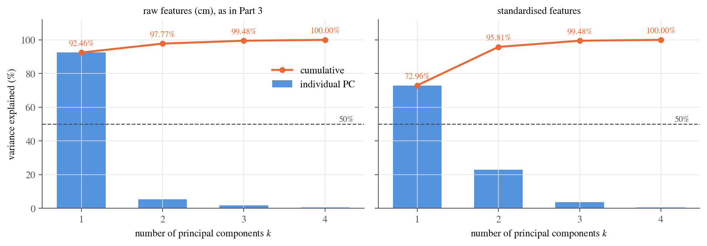
(1) Variance explained by the 2-D representation: \[\begin{equation*} R^2_2=\frac{\sigma_1^2+\sigma_2^2}{\lVert \tilde{\mathbf{X}}\rVert_F^2}=\frac{630.0080+36.1579}{681.3706} =\frac{666.1660}{681.3706}=\boxed{97.77\%} . \end{equation*}\] Only \(\lVert \tilde{\mathbf{X}}-\hat{\mathbf{X}}_2\rVert_F^2=15.2046\) (\(2.23\%\)) is lost. That is an RMS reconstruction error of \(\sqrt{15.2046/150}=0.318\) cm per flower (over all four coordinates). Storing 2 numbers instead of 4 per flower halves the storage while keeping almost all of the information.
(2) PCs needed for 50% of the variance: \(\boxed{\text{one}}\). PC1 alone explains \(630.0080/681.3706=92.46\%\), which is well above 50%. The answer is still one PC if the features are standardised first (PC1 then explains \(72.96\%\)). For reference, 2 PCs are needed for 95% and 3 for 99%.
Comment. The spectrum decays very fast (\(\sigma_1^2/\sigma_2^2\approx17\)). This is a property of the data and also of the units. Petal length has the largest spread, so it dominates the raw covariance. After standardisation the first PC drops to \(73\%\) and PC2 rises to \(23\%\), but two PCs still capture \(95.8\%\). Either way, Iris is essentially a 2-D dataset.
Part 5 — Non-linear components (ISOMAP)
Use scikit-learn’s Isomap, which approximates geodesic distances by shortest paths through a \(k\)-nearest-neighbour graph and then fits an MDS model to them. Hand in the code and the plot for \(k=3\) nearest neighbours. Compare the non-linear reduction with PCA. Which is preferable and why? Evaluate using data-compression criteria or the ability to classify the data.
Method
ISOMAP (Tenenbaum, de Silva & Langford, 2000) has three steps:
Build a graph \(G\) in which each flower is joined to its \(k=3\) nearest neighbours (Euclidean), with edge weight equal to the distance. The graph is symmetrised.
Approximate the geodesic (along-the-manifold) distance \(d_G(i,j)\) by the shortest path in \(G\) (Dijkstra / Floyd–Warshall).
Find low-dimensional coordinates \(\mathbf y_i\) whose Euclidean distances match \(d_G\). scikit-learn does this with classical MDS: it double-centres \(\mathbf B=-\tfrac12\mathbf H\mathbf D_G^{\circ2}\mathbf H\) (\(\mathbf H=\mathbf I-\tfrac1N\mathbf 1\mathbf 1^{\mathsf{T}}\)) and takes the top eigenvectors scaled by \(\sqrt{\lambda}\). This is implemented as kernel PCA.
The assignment describes the last step as MDS fitted by gradient descent. scikit-learn’s
Isomap actually uses the closed-form eigen-solution. To cover both readings, the
same geodesic matrix \(\mathbf D_G\) was also embedded with sklearn.manifold.MDS. That
class minimises the metric stress \(\sum_{i<j}(\lVert\mathbf y_i-\mathbf y_j\rVert-d_G(i,j))^2\)
iteratively (SMACOF, a majorisation / gradient-descent scheme; 8 random starts, 1000 iterations).
A property of the 3-NN graph: it is disconnected
With \(k=3\) the neighbourhood graph has two connected components: the 50 setosa flowers, and the 100 versicolor + virginica flowers. No setosa flower has a non-setosa flower among its 3 nearest neighbours (or vice versa), which is the same gap seen in Parts 2–3. Geodesic distances between the components are then undefined. scikit-learn warns (“The number of connected components of the neighbors graph is 2 > 1”) and completes the graph by adding the shortest Euclidean edge between components: setosa sample 24 \((5.1,3.3,1.7,0.5)\) to versicolor sample 99 \((5.1,2.5,3.0,1.1)\), of length \(1.640\) cm (red in Figure 11). Every setosa-to-non-setosa geodesic therefore passes through this single bridge. The graph stays disconnected for every \(k\) tested up to \(20\) and becomes connected only around \(k=30\) (Table 5).
Result for \(k=3\)
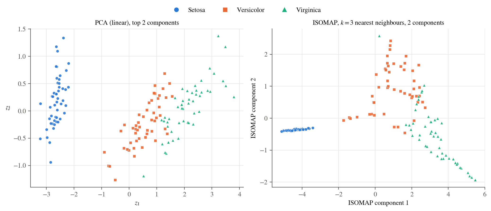
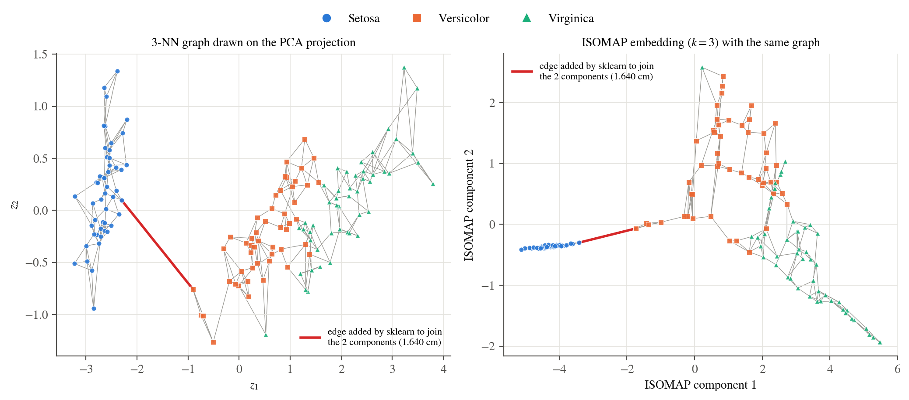
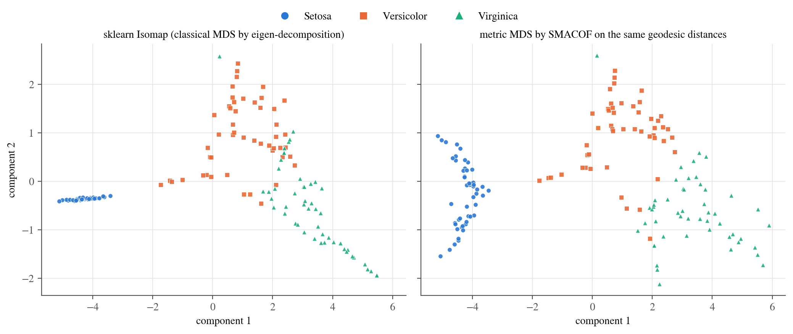
What the ISOMAP plot shows.
The 100 versicolor + virginica flowers are “unrolled” into a branching chain. The 3-NN graph has few edges, so the shortest paths follow thin strands of the cloud and the embedding stretches them into long arms (e.g. the virginica arm going to the lower right). The geodesic distances are longer than the Euclidean ones: the largest is \(10.85\) cm against \(7.09\) cm in the original space.
Setosa collapses to an almost one-dimensional streak in classical MDS. Every geodesic from setosa to the other 100 points goes through the same bridge node, so the large distances that dominate classical MDS hardly vary within setosa. SMACOF weights every pair equally and keeps the setosa cluster 2-D (Figure 12). Otherwise the two MDS solvers agree on the overall layout.
The geodesic matrix is not Euclidean. \(4.1\%\) of the eigenvalue mass of \(\mathbf B\) is negative, so no embedding in any dimension reproduces \(d_G\) exactly. Two components capture \(85.3+6.8=92.1\%\) of the positive spectrum. The comparable figure for PCA on Euclidean distances is \(97.8\%\).
Quantitative comparison with PCA
Both methods were compared at \(d=1,2,3\) output dimensions on criteria for classification and for compression / structure preservation:
5-NN accuracy (repeated 10-fold CV, embedding refitted in each fold; ISOMAP maps test points with its out-of-sample
transform).Trustworthiness (5 neighbours): the fraction of neighbourhoods in the embedding that are true neighbourhoods in the original 4-D space (1 is perfect).
Residual variance \(1-r^2(\mathbf D_{\text{ref}},\mathbf D_{\text{emb}})\) (Tenenbaum et al.), computed against both the Euclidean and the geodesic distance matrices.
Reconstruction RMSE (cm, out-of-fold). PCA decodes with \(\hat{\mathbf{x}}=\bar{\mathbf{x}}+\mathbf{W}_d\mathbf{z}\). ISOMAP has no inverse map, so a 5-NN regressor from embedding to features, fitted on the training fold, is used as its decoder.
| \(d\) | Method | 5-NN acc. (%) | Silhouette | Trustworth. | Res. var. (Eucl.) | Res. var. (geod.) | Recon. RMSE (cm) |
|---|---|---|---|---|---|---|---|
| 1 | PCA | 91.3 \(\pm\) 6.1 | 0.614 | 0.9206 | 0.0152 | 0.0476 | 0.590 |
| ISOMAP | 92.7 \(\pm\) 6.6 | 0.563 | 0.9153 | 0.0351 | 0.0293 | 0.589 | |
| 2 | PCA | 96.5 \(\pm\) 5.0 | 0.534 | 0.9787 | 0.0032 | 0.0426 | 0.324 |
| ISOMAP | 93.3 \(\pm\) 6.8 | 0.560 | 0.9361 | 0.0459 | 0.0161 | 0.496 | |
| 3 | PCA | 96.4 \(\pm\) 5.2 | 0.513 | 0.9963 | 0.0004 | 0.0419 | 0.158 |
| ISOMAP | 95.7 \(\pm\) 5.5 | 0.558 | 0.9549 | 0.0531 | 0.0113 | 0.476 |
| \(k\) | comp. | 5-NN acc. (%) | Trustworthiness | Res. var. (geod.) |
|---|---|---|---|---|
| 3 | 2 | 93.3 \(\pm\) 6.8 | 0.9361 | 0.0161 |
| 5 | 2 | 94.7 \(\pm\) 5.5 | 0.9446 | 0.0107 |
| 8 | 2 | 94.0 \(\pm\) 5.8 | 0.9533 | 0.0081 |
| 10 | 2 | 92.4 \(\pm\) 6.1 | 0.9505 | 0.0082 |
| 15 | 2 | 95.7 \(\pm\) 5.9 | 0.9469 | 0.0072 |
| 20 | 2 | 95.7 \(\pm\) 5.1 | 0.9430 | 0.0070 |
| 30 | 1 | 95.7 \(\pm\) 5.3 | 0.9558 | 0.0069 |
| 50 | 1 | 94.5 \(\pm\) 6.2 | 0.9688 | 0.0073 |
Which is preferable? For Iris, PCA.
Classification. With 2 components PCA reaches \(96.5\%\) 5-NN accuracy, the same as the raw 4-D data, against \(93.3\%\) for ISOMAP. In 3-D PCA is still ahead (\(96.4\) vs. \(95.7\%\)). Only in 1-D does ISOMAP edge ahead (\(92.7\) vs. \(91.3\%\)), and that difference is well within one fold-to-fold standard deviation (\(\approx6\%\)). ISOMAP’s slightly higher silhouette in 2-D and 3-D comes from setosa being squeezed into a tight streak far from the other classes. It does not improve the hard versicolor/virginica boundary, which is where all the errors are.
Compression. PCA is an explicit linear code. Its encoder and decoder need only \(\bar{\mathbf{x}}\) and a \(4\times d\) matrix, and the 2-D code keeps \(97.77\%\) of the variance with a reconstruction RMSE of \(0.32\) cm. ISOMAP has no decoder. Even with a 5-NN decoder its 2-D reconstruction error is \(0.50\) cm, worse than PCA with the same non-linear decoder (\(0.37\) cm). Mapping a new flower requires keeping all 150 training points and their graph.
Structure preservation. PCA has the higher trustworthiness at every \(d\) (\(0.979\) vs. \(0.936\) in 2-D) and almost no residual variance against Euclidean distances (\(0.003\)). ISOMAP only wins on the geodesic residual variance, the quantity it optimises, and those geodesics come from a disconnected graph joined by one artificial edge.
Robustness. PCA has no tuning parameter and a unique, closed-form solution. ISOMAP depends strongly on \(k\) (Figure 14, Table 5). With \(k=3\) the graph is sparse, so a few edges decide the shape of the whole map. Accuracy moves between \(92.4\%\) and \(95.7\%\) as \(k\) changes and never beats 2-D PCA (\(96.5\%\)).
Why. ISOMAP is worth its cost when the data lie on a curved manifold (e.g. a Swiss roll), where Euclidean distances cut across the manifold. Iris is nearly linear: two linear directions explain \(97.8\%\) of the variance and the residual is small isotropic noise. The geodesic approximation therefore adds distortion and gives no real benefit. The premise that “Euclidean distances between very different plants are not meaningful” holds for setosa vs. the rest, but that separation is so large that every method, linear or not, shows it.
Summary
| Part | Result |
|---|---|
| 1 | \(\bar{\mathbf{x}}=(0,1)\), \(\mathbf{S}=\bigl(\begin{smallmatrix}2&2\\2&2\end{smallmatrix}\bigr)\), \(\lambda=4,0\). First PC \(\mathbf{w}_1=(1,1)/\sqrt2\). Error of \((3,3)\): \(1/\sqrt2\approx0.707\) (\(\hat{\mathbf{x}}=(2.5,3.5)\)). Error of \((3,4)\): \(0\) (it lies on the PC1 line \(x_2=x_1+1\)). |
| 2 | The petal features (PL, PW, PL + PW) give nice clusters. Setosa is isolated in any view that contains a petal feature (or SL + SW). Versicolor and virginica overlap in every marginal and are never linearly separable. PW alone: \(96.0\%\) 5-NN, as good as all 4 features. |
| 3 | \(\mathbf{w}_1=(0.361,-0.085,0.857,0.358)\) (size / petal axis), \(\mathbf{w}_2=(0.657,0.730,-0.173,-0.076)\) (sepal axis), plus \(\mathbf{w}_3,\mathbf{w}_4\) in Table 2. PC1 separates setosa, and PC1–PC2 gives the same 5-NN accuracy as the full data. |
| 4 | \(\lVert \tilde{\mathbf{X}}\rVert_F^2=681.37=\sum\sigma_i^2\). The 2-D representation explains \(\mathbf{97.77\%}\) of the variance. One PC (\(92.46\%\)) explains more than 50%. |
| 5 | ISOMAP (\(k=3\)) works on a disconnected graph (setosa | rest) completed by one bridge edge. It unrolls versicolor/virginica into a chain and collapses setosa. PCA is preferable here: better classification (2-D: \(96.5\) vs. \(93.3\%\)), better reconstruction (\(0.32\) vs. \(0.50\) cm), a usable decoder, higher trustworthiness, and no \(k\) to tune. |
PCA on standardised features
Standardising each feature to unit variance before PCA gives the axes below. PC1 then weights SL, PL and PW about equally, and PC2 is almost pure sepal width. The 2-D picture is qualitatively the same (Figure 13), with \(95.81\%\) of the (standardised) variance in 2 components.
| SL | SW | PL | PW | \(\lambda_k\) | % var. | |
|---|---|---|---|---|---|---|
| PC1 | \(+0.5211\) | \(-0.2693\) | \(+0.5804\) | \(+0.5649\) | 2.9381 | 72.96% |
| PC2 | \(+0.3774\) | \(+0.9233\) | \(+0.0245\) | \(+0.0669\) | 0.9202 | 22.85% |
| PC3 | \(+0.7196\) | \(-0.2444\) | \(-0.1421\) | \(-0.6343\) | 0.1477 | 3.67% |
| PC4 | \(-0.2613\) | \(+0.1235\) | \(+0.8014\) | \(-0.5236\) | 0.0209 | 0.52% |
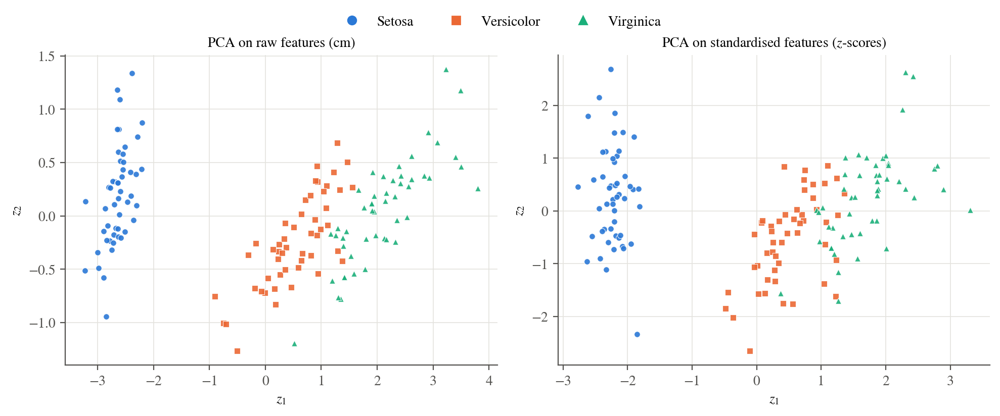
Additional ISOMAP figures
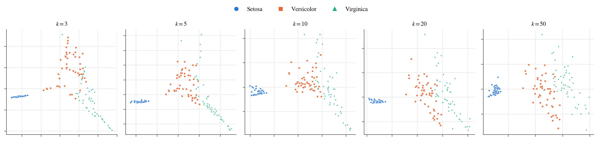
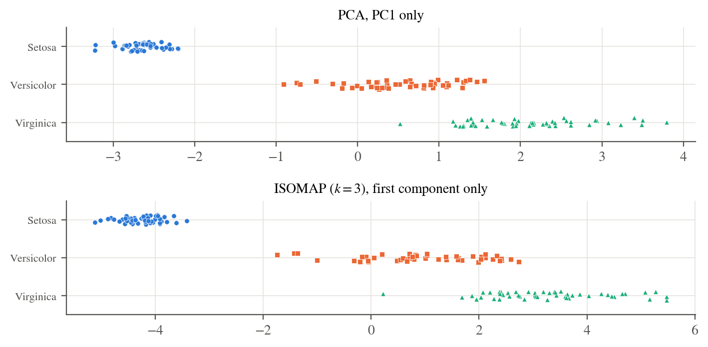
Code
The single script below reproduces every number, table and figure in this report. Run
python make_report.py from the code/ folder. It requires NumPy, SciPy, Matplotlib and
scikit-learn and uses the Iris data bundled with scikit-learn. The ISOMAP call required by
Part 5 is Isomap(n_neighbors=3, n_components=...).
"""SYDE 572 - Assignment 3: PCA, marginal visualisation and ISOMAP on the Iris data.
Run every part of the assignment and write the figures, LaTeX tables and results.json
used by ../report.tex. Usage: python make_report.py
Part 1 PCA by hand on the 5-point toy set (numerical check + figure)
Part 2 marginal views of Iris: every 1-, 2- and 3-feature subset, plus a separability table
Part 3 PCA with scikit-learn: projections on PC1, PC1-2, PC1-3 and the PC vectors
Part 4 explained variance through the Frobenius norm of the centred data matrix
Part 5 ISOMAP (k = 3 neighbours) vs PCA: embeddings, classification and compression metrics
Data: scikit-learn's bundled copy of the UCI Iris data (150 x 4, three classes of 50).
"""
import itertools
import json
import os
import warnings
import matplotlib
matplotlib.use("Agg")
import matplotlib.pyplot as plt
import numpy as np
from matplotlib.lines import Line2D
from scipy.sparse.csgraph import connected_components
from scipy.spatial.distance import pdist, squareform
from sklearn.datasets import load_iris
from sklearn.decomposition import PCA
from sklearn.manifold import MDS, Isomap, trustworthiness
from sklearn.metrics import silhouette_score
from sklearn.model_selection import RepeatedStratifiedKFold, StratifiedKFold, cross_val_score
from sklearn.neighbors import KNeighborsClassifier, KNeighborsRegressor, kneighbors_graph
from sklearn.pipeline import make_pipeline
from sklearn.preprocessing import StandardScaler
from sklearn.discriminant_analysis import LinearDiscriminantAnalysis
from scipy.optimize import linprog
HERE = os.path.dirname(os.path.abspath(__file__))
FIG = os.path.join(HERE, "..", "figures")
TAB = os.path.join(HERE, "..", "tables")
os.makedirs(FIG, exist_ok=True)
os.makedirs(TAB, exist_ok=True)
SEED = 0
K_ISO = 3 # number of neighbours the assignment asks for in Part 5
K_CLF = 5 # k of the k-NN classifier / decoder used as an evaluation tool
# ----------------------------------------------------------------------------- style
CLS_COL = ["#2a78d6", "#eb6834", "#1baf7a"] # setosa, versicolor, virginica
CLS_MRK = ["o", "s", "^"]
INK, INK2, GRID, ACC = "#0b0b0b", "#52514e", "#e4e3de", "#1F4E79"
plt.rcParams.update({
"font.family": "STIXGeneral", "mathtext.fontset": "stix", "font.size": 10,
"axes.edgecolor": INK2, "axes.labelcolor": INK, "axes.linewidth": 0.8,
"axes.spines.top": False, "axes.spines.right": False,
"axes.grid": True, "grid.color": GRID, "grid.linewidth": 0.6,
"xtick.color": INK2, "ytick.color": INK2, "legend.frameon": False,
"lines.linewidth": 2, "lines.markersize": 5, "savefig.bbox": "tight",
"savefig.dpi": 200,
})
def save(fig, name):
fig.savefig(os.path.join(FIG, name + ".pdf"))
fig.savefig(os.path.join(FIG, name + ".png"))
plt.close(fig)
def write_table(name, rows):
with open(os.path.join(TAB, name + ".tex"), "w") as f:
f.write("\n".join(rows) + "\n")
def class_legend(names, ax=None, fig=None, **kw):
handles = [Line2D([], [], ls="", marker=CLS_MRK[c], color=CLS_COL[c], markersize=6,
label=names[c]) for c in range(3)]
return (fig or ax).legend(handles=handles, **kw)
def scatter_classes(ax, Z, y, s=18, three_d=False):
for c in range(3):
m = y == c
if three_d:
ax.scatter(Z[m, 0], Z[m, 1], Z[m, 2], s=s, c=CLS_COL[c], marker=CLS_MRK[c],
edgecolors="white", linewidths=0.3, depthshade=False)
else:
ax.scatter(Z[m, 0], Z[m, 1], s=s, c=CLS_COL[c], marker=CLS_MRK[c],
edgecolors="white", linewidths=0.4, alpha=0.9, zorder=3)
def style_3d(ax):
ax.set_box_aspect(None, zoom=0.86)
for axis in (ax.xaxis, ax.yaxis, ax.zaxis):
axis.pane.set_facecolor("#fafaf8")
axis.pane.set_edgecolor(GRID)
axis._axinfo["grid"]["color"] = GRID
axis._axinfo["grid"]["linewidth"] = 0.5
ax.tick_params(labelsize=7, pad=0)
def hist_classes(ax, z, y, bins):
for c in range(3):
ax.hist(z[y == c], bins=bins, color=CLS_COL[c], alpha=0.45, edgecolor=CLS_COL[c],
linewidth=1.0, histtype="stepfilled")
ax.hist(z[y == c], bins=bins, color=CLS_COL[c], linewidth=1.2, histtype="step")
ax.set_ylabel("count")
def strip_classes(ax, z, y, rng):
for c in range(3):
m = y == c
ax.scatter(z[m], c + 0.25 * (rng.random(m.sum()) - 0.5), s=12, c=CLS_COL[c],
marker=CLS_MRK[c], edgecolors="white", linewidths=0.3, zorder=3)
ax.set_yticks([0, 1, 2])
ax.set_ylim(-0.5, 2.5)
ax.invert_yaxis()
def knn_cv(model, X, y, n_rep=5):
"""Mean / std of repeated stratified 10-fold CV accuracy (the whole pipeline is
refitted inside each fold, so the embedding never sees its own test points)."""
cv = RepeatedStratifiedKFold(n_splits=10, n_repeats=n_rep, random_state=SEED)
with warnings.catch_warnings():
warnings.simplefilter("ignore")
s = cross_val_score(model, X, y, cv=cv)
return float(s.mean()), float(s.std())
def linearly_separable(Xs, lab):
"""True iff some hyperplane w.x + b separates the two groups exactly, i.e. the LP
s_i (w.x_i + b) >= 1 (s_i = +-1) is feasible."""
s_ = np.where(lab, 1.0, -1.0)
A = -s_[:, None] * np.hstack([Xs, np.ones((len(Xs), 1))])
res = linprog(np.zeros(Xs.shape[1] + 1), A_ub=A, b_ub=-np.ones(len(Xs)),
bounds=[(None, None)] * (Xs.shape[1] + 1), method="highs")
return bool(res.status == 0)
def residual_variance(D_ref, Z):
"""Tenenbaum et al. (2000): 1 - R^2 between reference distances and embedding distances."""
r = np.corrcoef(squareform(D_ref, checks=False), pdist(Z))[0, 1]
return float(1 - r ** 2)
R = {} # everything that goes into results.json
# =============================================================================
# Part 1 - PCA by hand
# =============================================================================
X1 = np.array([[-2, -1], [-1, 0], [0, 1], [1, 2], [2, 3]], dtype=float)
mu1 = X1.mean(0)
Xc1 = X1 - mu1
S1 = Xc1.T @ Xc1 / len(X1) # 1/N covariance
evals1, evecs1 = np.linalg.eigh(S1)
order = np.argsort(evals1)[::-1]
evals1, evecs1 = evals1[order], evecs1[:, order]
w1 = evecs1[:, 0] * np.sign(evecs1[0, 0]) # sign so that w = (+, +)
def recon1(x):
a = w1 @ (x - mu1)
xh = mu1 + a * w1
return a, xh, float(np.linalg.norm(x - xh))
R["part1"] = {"mean": mu1.tolist(), "cov": S1.tolist(), "eigvals": evals1.tolist(),
"w1": w1.tolist()}
for p in [(3, 3), (3, 4)]:
a, xh, e = recon1(np.array(p, float))
# what you would get if you forgot to centre the data (line through the origin)
e_nc = float(np.linalg.norm(np.array(p) - (w1 @ np.array(p)) * w1))
R["part1"][str(p)] = {"code": a, "xhat": xh.tolist(), "err": e, "err_uncentred": e_nc}
fig, ax = plt.subplots(figsize=(6.2, 4.6))
tt = np.linspace(-6.5, 6.5, 2)
ax.plot(mu1[0] + tt * w1[0], mu1[1] + tt * w1[1], color=ACC, lw=1.6,
label=r"PC1: $\mathbf{x}=\bar{\mathbf{x}}+a\,\mathbf{w}_1$")
ax.plot(tt * w1[0], tt * w1[1], color=INK2, lw=1, ls=":",
label="same direction through the origin (no centring)")
ax.scatter(X1[:, 0], X1[:, 1], s=46, color=CLS_COL[0], zorder=4, label="data")
ax.scatter(*mu1, s=80, marker="X", color=INK, zorder=5, label=r"mean $\bar{\mathbf{x}}=(0,1)$")
for p, col in [((3, 3), CLS_COL[1]), ((3, 4), CLS_COL[2])]:
p = np.array(p, float)
_, xh, e = recon1(p)
ax.scatter(*p, s=70, marker="D", color=col, zorder=6, edgecolors="white")
if e > 1e-9:
ax.plot([p[0], xh[0]], [p[1], xh[1]], color=col, lw=1.6, ls="--", zorder=5)
ax.scatter(*xh, s=40, marker="o", facecolors="white", edgecolors=col, zorder=6,
linewidths=1.5)
ax.annotate(r"$\hat{\mathbf{x}}=(2.5,\,3.5)$", xh, xytext=(-66, 6),
textcoords="offset points", color=col, fontsize=9)
ax.annotate(rf"$(3,3)$, error $={e:.3f}$", p, xytext=(8, -12),
textcoords="offset points", color=col, fontsize=9)
else:
ax.annotate("$(3,4)$ lies on PC1,\nerror $=0$", p, xytext=(10, -4),
textcoords="offset points", color=col, fontsize=9)
ax.set_xlabel(r"$x_1$")
ax.set_ylabel(r"$x_2$")
ax.set_xlim(-3, 6)
ax.set_ylim(-2, 5)
ax.set_aspect("equal")
ax.legend(loc="upper left", fontsize=8)
save(fig, "p1_pca_by_hand")
# =============================================================================
# Data
# =============================================================================
iris = load_iris()
X, y = iris.data, iris.target
FEAT = ["sepal length", "sepal width", "petal length", "petal width"]
FSHORT = ["SL", "SW", "PL", "PW"]
NAMES = [n.capitalize() for n in iris.target_names]
N, D = X.shape
rng = np.random.default_rng(SEED)
R["data"] = {"N": N, "D": D, "class_counts": np.bincount(y).tolist(),
"mean": X.mean(0).tolist(), "std": X.std(0, ddof=1).tolist()}
# =============================================================================
# Part 2 - marginal (feature-subset) visualisations
# =============================================================================
# --- 1 feature: histogram + strip plot per feature
fig, axes = plt.subplots(2, 4, figsize=(11, 4.4), sharex="col",
gridspec_kw={"height_ratios": [2.2, 1]})
for j in range(4):
bins = np.linspace(X[:, j].min(), X[:, j].max(), 22)
hist_classes(axes[0, j], X[:, j], y, bins)
axes[0, j].set_title(FEAT[j].capitalize() + " (cm)", fontsize=10)
strip_classes(axes[1, j], X[:, j], y, rng)
axes[1, j].set_yticklabels(NAMES if j == 0 else [], fontsize=8)
axes[1, j].set_xlabel(FEAT[j] + " (cm)")
if j:
axes[0, j].set_ylabel("")
class_legend(NAMES, fig=fig, loc="upper center", ncol=3, bbox_to_anchor=(0.5, 1.05))
fig.tight_layout()
save(fig, "p2_1d")
# --- 2 features: full scatter-plot matrix
fig, axes = plt.subplots(4, 4, figsize=(9, 8.6))
for i in range(4):
for j in range(4):
ax = axes[i, j]
if i == j:
bins = np.linspace(X[:, j].min(), X[:, j].max(), 20)
hist_classes(ax, X[:, j], y, bins)
ax.set_ylabel("")
ax.set_yticks([])
else:
scatter_classes(ax, X[:, [j, i]], y, s=10)
if i == 3:
ax.set_xlabel(FEAT[j] + " (cm)")
else:
ax.set_xticklabels([])
if j == 0:
ax.set_ylabel(FEAT[i] + " (cm)")
elif i != j and not (i == 0 and j == 1):
ax.set_yticklabels([])
class_legend(NAMES, fig=fig, loc="upper center", ncol=3, bbox_to_anchor=(0.5, 1.02))
fig.tight_layout()
save(fig, "p2_2d")
# --- 3 features: the four triplets
fig = plt.figure(figsize=(10, 9))
for k, trip in enumerate(itertools.combinations(range(4), 3)):
ax = fig.add_subplot(2, 2, k + 1, projection="3d")
scatter_classes(ax, X[:, trip], y, s=14, three_d=True)
ax.set_xlabel(FEAT[trip[0]], fontsize=8, labelpad=-2)
ax.set_ylabel(FEAT[trip[1]], fontsize=8, labelpad=-2)
ax.set_zlabel(FEAT[trip[2]], fontsize=8, labelpad=-4)
ax.set_title(" + ".join(FSHORT[t] for t in trip), fontsize=10)
ax.view_init(elev=20, azim=-58)
style_3d(ax)
class_legend(NAMES, fig=fig, loc="upper center", ncol=3, bbox_to_anchor=(0.5, 0.99))
fig.subplots_adjust(wspace=0.02, hspace=0.08)
save(fig, "p2_3d")
# --- separability of every feature subset
rows, sep = [], []
for r in (1, 2, 3, 4):
for sub in itertools.combinations(range(4), r):
Xs = X[:, sub]
acc, sd = knn_cv(KNeighborsClassifier(K_CLF), Xs, y)
sil = float(silhouette_score(Xs, y))
# Exact linear-separability tests (LP feasibility): setosa vs rest, versicolor vs virginica
setosa_sep = linearly_separable(Xs, y == 0)
m = y > 0
vv_sep = linearly_separable(Xs[m], y[m] == 2)
# graded measure for the hard pair: training errors of Fisher's LDA
lda = LinearDiscriminantAnalysis().fit(Xs[m], y[m])
vv_err = int(np.sum(lda.predict(Xs[m]) != y[m]))
name = " + ".join(FSHORT[s] for s in sub)
sep.append({"subset": name, "knn_acc": acc, "knn_std": sd, "silhouette": sil,
"setosa_separable": setosa_sep, "vv_separable": vv_sep,
"vv_lda_errors": vv_err})
for r in sep:
rows.append(f"{r['subset']} & {100 * r['knn_acc']:.1f} $\\pm$ {100 * r['knn_std']:.1f} & "
f"{r['silhouette']:.3f} & {'yes' if r['setosa_separable'] else 'no'} & "
f"{'yes' if r['vv_separable'] else 'no'} & {r['vv_lda_errors']} \\\\")
if r["subset"] in ("PW", "PL + PW", "SW + PL + PW"):
rows.append("\\midrule")
write_table("p2_separability", rows)
R["part2"] = sep
# =============================================================================
# Part 3 - PCA with scikit-learn
# =============================================================================
pca = PCA(n_components=4).fit(X)
Z = pca.transform(X)
W = pca.components_ # rows are the PC directions
# cross-check against an eigen-decomposition of the (N-1) covariance matrix
C = np.cov(X.T)
ev, V = np.linalg.eigh(C)
ev, V = ev[::-1], V[:, ::-1]
assert np.allclose(ev, pca.explained_variance_)
assert np.allclose(np.abs(V.T), np.abs(W), atol=1e-10)
R["part3"] = {"mean": pca.mean_.tolist(), "components": W.tolist(),
"explained_variance": pca.explained_variance_.tolist(),
"explained_variance_ratio": pca.explained_variance_ratio_.tolist(),
"singular_values": pca.singular_values_.tolist(), "cov": C.tolist()}
rows = []
for k in range(4):
rows.append(f"PC{k + 1} & " + " & ".join(f"${v:+.4f}$" for v in W[k]) +
f" & {pca.explained_variance_[k]:.4f} & {100 * pca.explained_variance_ratio_[k]:.2f}\\% \\\\")
write_table("p3_components", rows)
rows = [" & ".join(f"{v:.4f}" for v in C[i]) for i in range(4)]
rows = [FSHORT[i] + " & " + rows[i] + " \\\\" for i in range(4)]
write_table("p3_cov", rows)
# --- PC1 only
fig, axes = plt.subplots(2, 1, figsize=(7.2, 3.9), sharex=True,
gridspec_kw={"height_ratios": [2.2, 1]})
bins = np.linspace(Z[:, 0].min(), Z[:, 0].max(), 30)
hist_classes(axes[0], Z[:, 0], y, bins)
strip_classes(axes[1], Z[:, 0], y, rng)
axes[1].set_yticklabels(NAMES, fontsize=8)
axes[1].set_xlabel(rf"$z_1$ = projection on PC1 (cm), {100 * pca.explained_variance_ratio_[0]:.2f}% of variance")
class_legend(NAMES, ax=axes[0], loc="upper center", ncol=3)
fig.tight_layout()
save(fig, "p3_pc1")
# --- PC1-PC2 with feature loadings (biplot)
fig, ax = plt.subplots(figsize=(6.8, 4.8))
scatter_classes(ax, Z[:, :2], y, s=22)
scale = 1.6
for j in range(4):
ax.annotate("", xy=(scale * W[0, j], scale * W[1, j]), xytext=(0, 0),
arrowprops=dict(arrowstyle="-|>", color=INK, lw=1.3), annotation_clip=False, zorder=5)
off = {0: (4, 4), 1: (-30, 6), 2: (4, -12), 3: (-6, -14)}[j]
ax.annotate(FEAT[j], (scale * W[0, j], scale * W[1, j]), xytext=off,
textcoords="offset points", fontsize=8.5, color=INK)
ax.set_xlabel(rf"$z_1$ (PC1, {100 * pca.explained_variance_ratio_[0]:.2f}%)")
ax.set_ylabel(rf"$z_2$ (PC2, {100 * pca.explained_variance_ratio_[1]:.2f}%)")
ax.set_aspect("equal")
class_legend(NAMES, ax=ax, loc="lower center", ncol=3, fontsize=9, bbox_to_anchor=(0.5, 1.0))
save(fig, "p3_pc12")
# --- PC1-PC2-PC3
fig = plt.figure(figsize=(9.6, 4.6))
for k, (el, az) in enumerate([(22, -60), (18, 35)]):
ax = fig.add_subplot(1, 2, k + 1, projection="3d")
scatter_classes(ax, Z[:, :3], y, s=16, three_d=True)
ax.set_xlabel(r"$z_1$ (PC1)", fontsize=9, labelpad=-2)
ax.set_ylabel(r"$z_2$ (PC2)", fontsize=9, labelpad=-2)
ax.set_zlabel(r"$z_3$ (PC3)", fontsize=9, labelpad=-4)
ax.view_init(elev=el, azim=az)
ax.set_title(["oblique view", "rotated view"][k], fontsize=9)
style_3d(ax)
class_legend(NAMES, fig=fig, loc="upper center", ncol=3, bbox_to_anchor=(0.5, 1.0))
fig.subplots_adjust(wspace=0.05)
save(fig, "p3_pc123")
# --- loadings bar chart
fig, axes = plt.subplots(1, 4, figsize=(10, 2.5), sharey=True)
for k in range(4):
cols = [CLS_COL[0] if v >= 0 else CLS_COL[1] for v in W[k]]
axes[k].bar(range(4), W[k], color=cols, width=0.65)
axes[k].axhline(0, color=INK2, lw=0.8)
axes[k].set_xticks(range(4))
axes[k].set_xticklabels(FSHORT)
axes[k].set_title(rf"$\mathbf{{w}}_{k + 1}$ ({100 * pca.explained_variance_ratio_[k]:.2f}%)", fontsize=10)
axes[k].set_ylim(-1, 1)
axes[0].set_ylabel("loading")
fig.tight_layout()
save(fig, "p3_loadings")
# --- standardised PCA, for comparison (appendix)
Xs_std = StandardScaler().fit_transform(X)
pca_s = PCA(n_components=4).fit(Xs_std)
Zs = pca_s.transform(Xs_std)
R["part3"]["std"] = {"components": pca_s.components_.tolist(),
"explained_variance_ratio": pca_s.explained_variance_ratio_.tolist()}
rows = []
for k in range(4):
rows.append(f"PC{k + 1} & " + " & ".join(f"${v:+.4f}$" for v in pca_s.components_[k]) +
f" & {pca_s.explained_variance_[k]:.4f} & {100 * pca_s.explained_variance_ratio_[k]:.2f}\\% \\\\")
write_table("p3_components_std", rows)
fig, axes = plt.subplots(1, 2, figsize=(10, 4))
scatter_classes(axes[0], Z[:, :2], y)
axes[0].set_title("PCA on raw features (cm)", fontsize=10)
scatter_classes(axes[1], Zs[:, :2], y)
axes[1].set_title("PCA on standardised features ($z$-scores)", fontsize=10)
for ax in axes:
ax.set_xlabel("$z_1$")
ax.set_ylabel("$z_2$")
class_legend(NAMES, fig=fig, loc="upper center", ncol=3, bbox_to_anchor=(0.5, 1.04))
fig.tight_layout()
save(fig, "p3_std_compare")
# =============================================================================
# Part 4 - data compression: explained variance via the Frobenius norm
# =============================================================================
Xc = X - X.mean(0)
fro2 = float(np.linalg.norm(Xc, "fro") ** 2)
U, s, Vt = np.linalg.svd(Xc, full_matrices=False)
assert np.isclose(fro2, np.sum(s ** 2))
rows, p4 = [], []
for k in range(1, 5):
Wk = Vt[:k].T
Xhat = Xc @ Wk @ Wk.T
res2 = float(np.linalg.norm(Xc - Xhat, "fro") ** 2)
kept2 = float(np.linalg.norm(Xhat, "fro") ** 2)
p4.append({"k": k, "sigma2": float(s[k - 1] ** 2), "kept": kept2, "residual": res2,
"explained": kept2 / fro2, "rmse": float(np.sqrt(res2 / N))})
rows.append(f"{k} & {s[k - 1]:.4f} & {s[k - 1] ** 2:.4f} & "
f"{100 * s[k - 1] ** 2 / fro2:.2f}\\% & {kept2:.4f} & {res2:.4f} & "
f"\\textbf{{{100 * kept2 / fro2:.2f}\\%}} \\\\")
write_table("p4_frobenius", rows)
cum_std = np.cumsum(pca_s.explained_variance_ratio_)
R["part4"] = {"fro2": fro2, "trace_cov_times_N_minus_1": float(np.trace(C) * (N - 1)),
"rows": p4, "k50": int(np.argmax(np.cumsum(s ** 2) / fro2 >= 0.5) + 1),
"k50_std": int(np.argmax(cum_std >= 0.5) + 1), "cum_std": cum_std.tolist(),
"k95": int(np.argmax(np.cumsum(s ** 2) / fro2 >= 0.95) + 1),
"k99": int(np.argmax(np.cumsum(s ** 2) / fro2 >= 0.99) + 1)}
fig, axes = plt.subplots(1, 2, figsize=(10, 3.6), sharey=True)
for ax, ratio, title in [(axes[0], s ** 2 / fro2, "raw features (cm), as in Part 3"),
(axes[1], pca_s.explained_variance_ratio_, "standardised features")]:
ks = np.arange(1, 5)
cum = np.cumsum(ratio)
ax.bar(ks, 100 * ratio, color=CLS_COL[0], alpha=0.8, width=0.6, label="individual PC")
ax.plot(ks, 100 * cum, color=CLS_COL[1], marker="o", label="cumulative")
for k, c in zip(ks, cum):
ax.annotate(f"{100 * c:.2f}%", (k, 100 * c), xytext=(0, 7), textcoords="offset points",
ha="center", fontsize=8.5, color=CLS_COL[1])
ax.axhline(50, color=INK2, ls="--", lw=1)
ax.text(4.35, 51.5, "50%", color=INK2, fontsize=8.5, ha="right")
ax.set_xticks(ks)
ax.set_xlabel("number of principal components $k$")
ax.set_title(title, fontsize=10)
ax.set_ylim(0, 112)
axes[0].set_ylabel("variance explained (%)")
axes[0].legend(loc="upper right", bbox_to_anchor=(1.0, 0.8))
fig.tight_layout()
save(fig, "p4_scree")
# =============================================================================
# Part 5 - ISOMAP with k = 3 neighbours, compared with PCA
# =============================================================================
G = kneighbors_graph(X, K_ISO, mode="distance")
n_cc, cc_lab = connected_components(G, directed=False)
with warnings.catch_warnings(record=True) as wlist:
warnings.simplefilter("always")
iso = Isomap(n_neighbors=K_ISO, n_components=3).fit(X)
iso_warn = [str(w.message) for w in wlist if "connected components" in str(w.message)]
Y = iso.embedding_
DG = iso.dist_matrix_ # approximate geodesic distances (graph completed)
DE = squareform(pdist(X))
# Which edge did sklearn add to join the two components? (the closest pair across them)
A, B = np.where(cc_lab == 0)[0], np.where(cc_lab == 1)[0]
dAB = DE[np.ix_(A, B)]
ia, ib = np.unravel_index(np.argmin(dAB), dAB.shape)
bridge = (int(A[ia]), int(B[ib]), float(dAB[ia, ib]))
# Same geodesic distances, embedded with metric MDS by SMACOF (iterative stress
# majorisation, the gradient-descent style MDS described in the assignment)
mds = MDS(n_components=2, metric="precomputed", metric_mds=True, init="random", n_init=8,
max_iter=1000, eps=1e-9, random_state=SEED, normalized_stress=False)
Y_mds = mds.fit_transform(DG)
def procrustes_align(A_, B_):
"""Rotate/reflect B_ onto A_ (both centred) so that embeddings can be compared visually."""
A0, B0 = A_ - A_.mean(0), B_ - B_.mean(0)
u, _, vt = np.linalg.svd(B0.T @ A0)
return B0 @ u @ vt
Y_mds = procrustes_align(Y[:, :2], Y_mds)
R["part5"] = {"n_components_graph": int(n_cc),
"component_sizes": np.bincount(cc_lab).tolist(),
"component_classes": [np.bincount(y[cc_lab == c], minlength=3).tolist()
for c in range(n_cc)],
"sklearn_warning": iso_warn[:1], "bridge": bridge,
"bridge_classes": [int(y[bridge[0]]), int(y[bridge[1]])],
"geo_max": float(DG.max()), "euc_max": float(DE.max()),
"iso_eigvals": iso.kernel_pca_.eigenvalues_.tolist(),
"iso_reconstruction_error_3d": float(iso.reconstruction_error()),
"mds_stress": float(mds.stress_),
"mds_vs_iso_rmsd": float(np.sqrt(np.mean(np.sum((Y_mds - (Y[:, :2] - Y[:, :2].mean(0))) ** 2, 1))))}
# fraction of the "geodesic" variance (classical-MDS eigenvalues) captured, like PCA's ratio
B_gram = -0.5 * (np.eye(N) - 1 / N) @ (DG ** 2) @ (np.eye(N) - 1 / N)
gev = np.sort(np.linalg.eigvalsh(B_gram))[::-1]
R["part5"]["geo_eig_ratio"] = (gev[:4] / gev[gev > 0].sum()).tolist()
R["part5"]["geo_neg_eig_frac"] = float(-gev[gev < 0].sum() / np.abs(gev).sum())
# --- main figure: PCA 2-D vs ISOMAP 2-D
fig, axes = plt.subplots(1, 2, figsize=(10.5, 4.3))
scatter_classes(axes[0], Z[:, :2], y, s=20)
axes[0].set_title("PCA (linear), top 2 components", fontsize=10)
axes[0].set_xlabel("$z_1$")
axes[0].set_ylabel("$z_2$")
scatter_classes(axes[1], Y[:, :2], y, s=20)
axes[1].set_title(rf"ISOMAP, $k={K_ISO}$ nearest neighbours, 2 components", fontsize=10)
axes[1].set_xlabel("ISOMAP component 1")
axes[1].set_ylabel("ISOMAP component 2")
class_legend(NAMES, fig=fig, loc="upper center", ncol=3, bbox_to_anchor=(0.5, 1.05))
fig.tight_layout()
save(fig, "p5_isomap_vs_pca")
# --- ISOMAP alone, larger, with the 3-NN graph drawn in the embedding
fig, axes = plt.subplots(1, 2, figsize=(10.5, 4.4))
Gs = G.maximum(G.T).tocoo()
for ax, E, ttl in [(axes[0], Z[:, :2], "3-NN graph drawn on the PCA projection"),
(axes[1], Y[:, :2], r"ISOMAP embedding ($k=3$) with the same graph")]:
for i, j in zip(Gs.row, Gs.col):
if i < j:
ax.plot(E[[i, j], 0], E[[i, j], 1], color="#9b9a95", lw=0.5, zorder=1)
i, j = bridge[:2]
ax.plot(E[[i, j], 0], E[[i, j], 1], color="#d62728", lw=2, zorder=2,
label=f"edge added by sklearn to join\nthe 2 components ({bridge[2]:.3f} cm)")
scatter_classes(ax, E, y, s=16)
ax.set_title(ttl, fontsize=10)
ax.legend(loc="lower right" if ax is axes[0] else "upper left", fontsize=8)
axes[0].set_xlabel("$z_1$")
axes[0].set_ylabel("$z_2$")
axes[1].set_xlabel("ISOMAP component 1")
axes[1].set_ylabel("ISOMAP component 2")
class_legend(NAMES, fig=fig, loc="upper center", ncol=3, bbox_to_anchor=(0.5, 1.05))
fig.tight_layout()
save(fig, "p5_graph")
# --- ISOMAP (kernel-PCA / classical MDS) vs SMACOF metric MDS on the same geodesic distances
fig, axes = plt.subplots(1, 2, figsize=(10.5, 4.2), sharex=True, sharey=True)
scatter_classes(axes[0], Y[:, :2] - Y[:, :2].mean(0), y)
axes[0].set_title("sklearn Isomap (classical MDS by eigen-decomposition)", fontsize=10)
scatter_classes(axes[1], Y_mds, y)
axes[1].set_title("metric MDS by SMACOF on the same geodesic distances", fontsize=10)
for ax in axes:
ax.set_xlabel("component 1")
axes[0].set_ylabel("component 2")
class_legend(NAMES, fig=fig, loc="upper center", ncol=3, bbox_to_anchor=(0.5, 1.05))
fig.tight_layout()
save(fig, "p5_mds")
# --- ISOMAP 1-D vs PCA 1-D
fig, axes = plt.subplots(2, 1, figsize=(7.2, 3.6))
strip_classes(axes[0], Z[:, 0], y, rng)
axes[0].set_yticklabels(NAMES, fontsize=8)
axes[0].set_title("PCA, PC1 only", fontsize=10)
strip_classes(axes[1], Y[:, 0], y, rng)
axes[1].set_yticklabels(NAMES, fontsize=8)
axes[1].set_title(r"ISOMAP ($k=3$), first component only", fontsize=10)
fig.tight_layout()
save(fig, "p5_1d")
# --- sweep over k
ks = [3, 5, 10, 20, 50]
fig, axes = plt.subplots(1, len(ks), figsize=(14, 3.0))
for ax, k in zip(axes, ks):
with warnings.catch_warnings():
warnings.simplefilter("ignore")
Yk = Isomap(n_neighbors=k, n_components=2).fit_transform(X)
scatter_classes(ax, Yk, y, s=8)
ax.set_title(f"$k={k}$", fontsize=10)
ax.set_xticklabels([])
ax.set_yticklabels([])
class_legend(NAMES, fig=fig, loc="upper center", ncol=3, bbox_to_anchor=(0.5, 1.1))
fig.tight_layout()
save(fig, "p5_ksweep")
# --- quantitative comparison for d = 1, 2, 3
cv10 = StratifiedKFold(n_splits=10, shuffle=True, random_state=SEED)
def recon_rmse(method, d):
"""Out-of-fold reconstruction RMSE (cm per sample, over all 4 coordinates).
PCA decodes linearly (inverse_transform). ISOMAP has no inverse map, so a k-NN
regressor fitted on (embedding -> original features) of the training fold is used."""
err = []
for tr, te in cv10.split(X, y):
with warnings.catch_warnings():
warnings.simplefilter("ignore")
if method == "pca":
m = PCA(d).fit(X[tr])
Xh = m.inverse_transform(m.transform(X[te]))
elif method == "pca_knn":
m = PCA(d).fit(X[tr])
dec = KNeighborsRegressor(K_CLF).fit(m.transform(X[tr]), X[tr])
Xh = dec.predict(m.transform(X[te]))
else:
m = Isomap(n_neighbors=K_ISO, n_components=d).fit(X[tr])
dec = KNeighborsRegressor(K_CLF).fit(m.embedding_, X[tr])
Xh = dec.predict(m.transform(X[te]))
err.append(np.sum((X[te] - Xh) ** 2, 1))
return float(np.sqrt(np.mean(np.concatenate(err))))
cmp_rows, cmp = [], []
acc4 = knn_cv(KNeighborsClassifier(K_CLF), X, y)
for d in (1, 2, 3):
Zd = Z[:, :d]
Yd = Y
if d < 3:
with warnings.catch_warnings():
warnings.simplefilter("ignore")
Yd = Isomap(n_neighbors=K_ISO, n_components=d).fit_transform(X)
for meth, E, model in [
("PCA", Zd, make_pipeline(PCA(d), KNeighborsClassifier(K_CLF))),
("ISOMAP", Yd, make_pipeline(Isomap(n_neighbors=K_ISO, n_components=d),
KNeighborsClassifier(K_CLF)))]:
acc, sd = knn_cv(model, X, y)
rec = {"d": d, "method": meth, "knn_acc": acc, "knn_std": sd,
"trust": float(trustworthiness(X, E, n_neighbors=K_CLF)),
"rv_euc": residual_variance(DE, E), "rv_geo": residual_variance(DG, E),
"sil": float(silhouette_score(E, y)),
"recon": recon_rmse("pca" if meth == "PCA" else "iso", d)}
if meth == "PCA":
rec["recon_knn"] = recon_rmse("pca_knn", d)
cmp.append(rec)
best = {}
for key, better in [("knn_acc", max), ("trust", max), ("rv_euc", min), ("rv_geo", min),
("sil", max), ("recon", min)]:
for d in (1, 2, 3):
vals = [r[key] for r in cmp if r["d"] == d]
best[(key, d)] = better(vals)
def fmt(r, key, txt):
return f"\\textbf{{{txt}}}" if np.isclose(r[key], best[(key, r['d'])]) else txt
for r in cmp:
cmp_rows.append(
f"{r['d'] if r['method'] == 'PCA' else ''} & {r['method']} & "
+ fmt(r, "knn_acc", f"{100 * r['knn_acc']:.1f}") + f" $\\pm$ {100 * r['knn_std']:.1f} & "
+ fmt(r, "sil", f"{r['sil']:.3f}") + " & "
+ fmt(r, "trust", f"{r['trust']:.4f}") + " & "
+ fmt(r, "rv_euc", f"{r['rv_euc']:.4f}") + " & "
+ fmt(r, "rv_geo", f"{r['rv_geo']:.4f}") + " & "
+ fmt(r, "recon", f"{r['recon']:.3f}") + " \\\\")
if r["method"] == "ISOMAP" and r["d"] < 3:
cmp_rows.append("\\midrule")
write_table("p5_compare", cmp_rows)
R["part5"]["compare"] = cmp
R["part5"]["knn_acc_4d"] = acc4
# k sweep metrics (2-D)
sweep = []
for k in [3, 5, 8, 10, 15, 20, 30, 50]:
model = make_pipeline(Isomap(n_neighbors=k, n_components=2), KNeighborsClassifier(K_CLF))
acc, sd = knn_cv(model, X, y)
with warnings.catch_warnings():
warnings.simplefilter("ignore")
isok = Isomap(n_neighbors=k, n_components=2).fit(X)
ncc = connected_components(kneighbors_graph(X, k), directed=False)[0]
sweep.append({"k": k, "acc": acc, "std": sd, "n_cc": int(ncc),
"trust": float(trustworthiness(X, isok.embedding_, n_neighbors=K_CLF)),
"rv_geo": residual_variance(isok.dist_matrix_, isok.embedding_)})
R["part5"]["sweep"] = sweep
write_table("p5_sweep", [f"{s_['k']} & {s_['n_cc']} & {100 * s_['acc']:.1f} $\\pm$ {100 * s_['std']:.1f}"
f" & {s_['trust']:.4f} & {s_['rv_geo']:.4f} \\\\" for s_ in sweep])
with open(os.path.join(HERE, "results.json"), "w") as f:
json.dump(R, f, indent=2)
print(json.dumps({k: R[k] for k in ("part1", "part4")}, indent=1))
print(json.dumps(R["part5"], indent=1)[:6000])
for r in R["part2"]:
print(r)
print(np.array2string(W, precision=4), pca.explained_variance_ratio_)